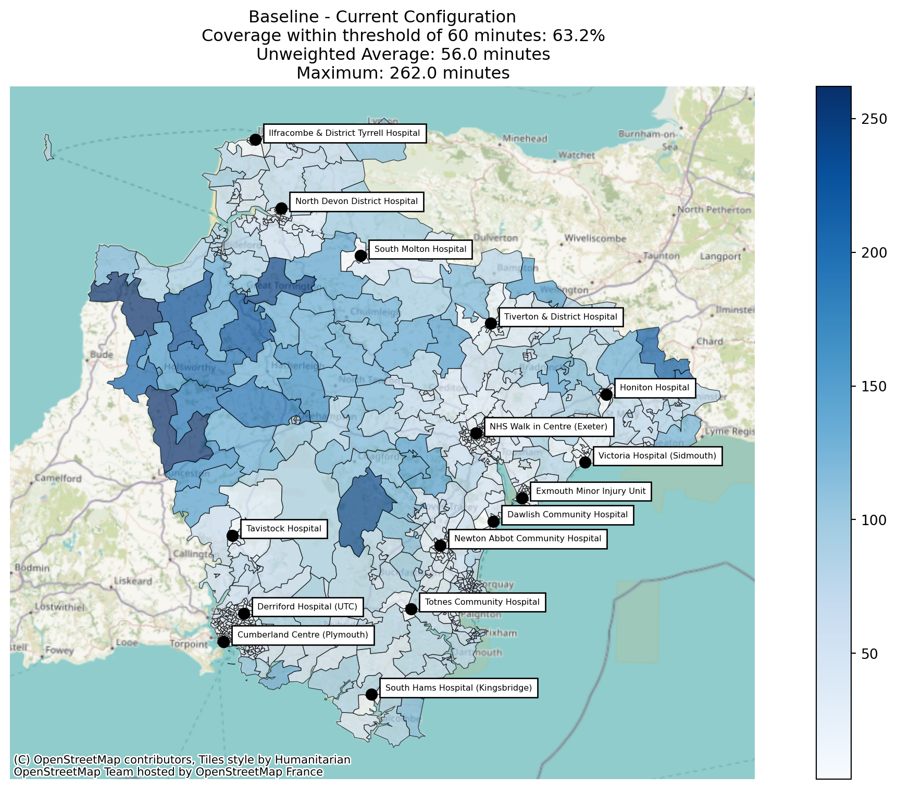
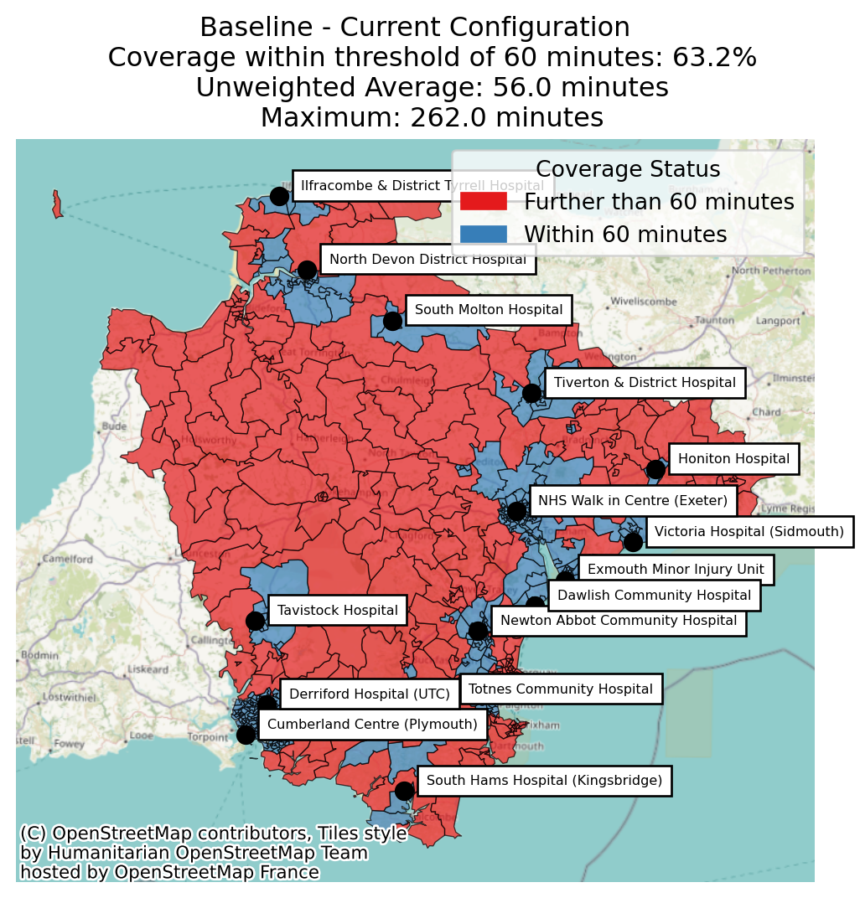
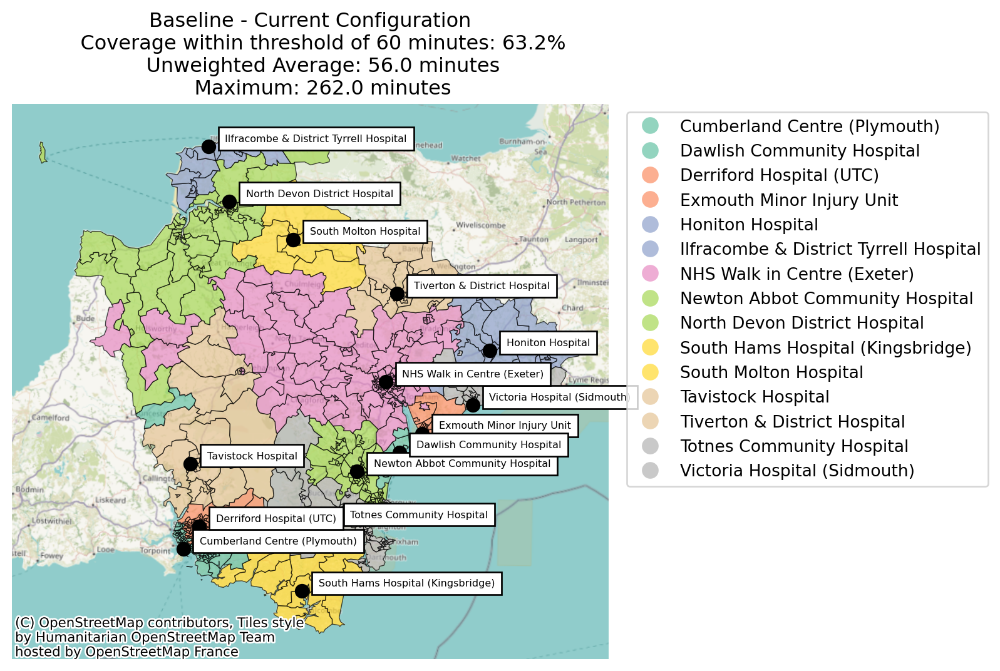
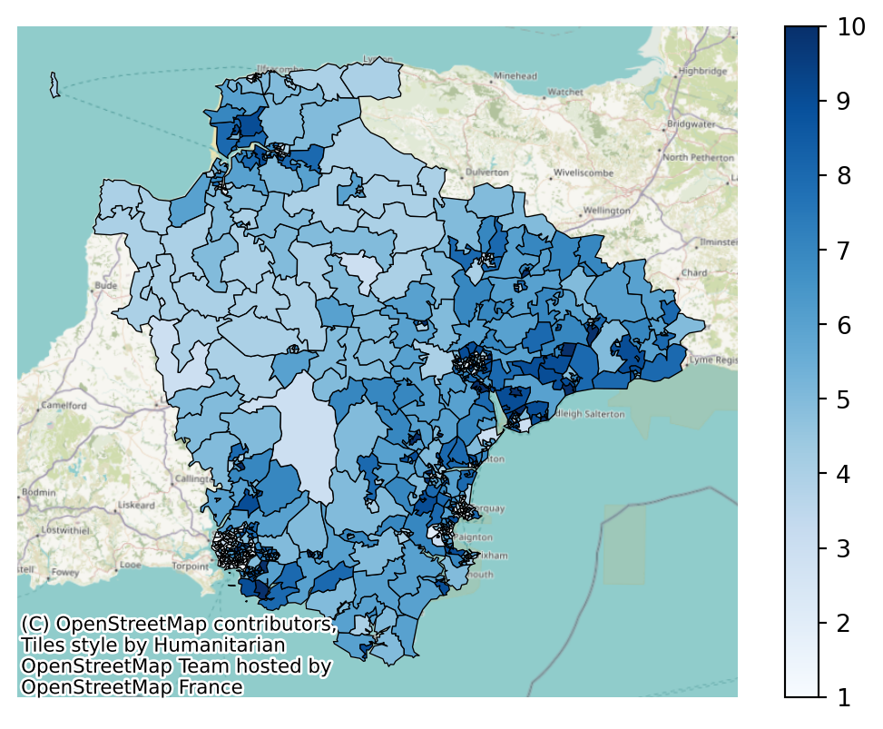
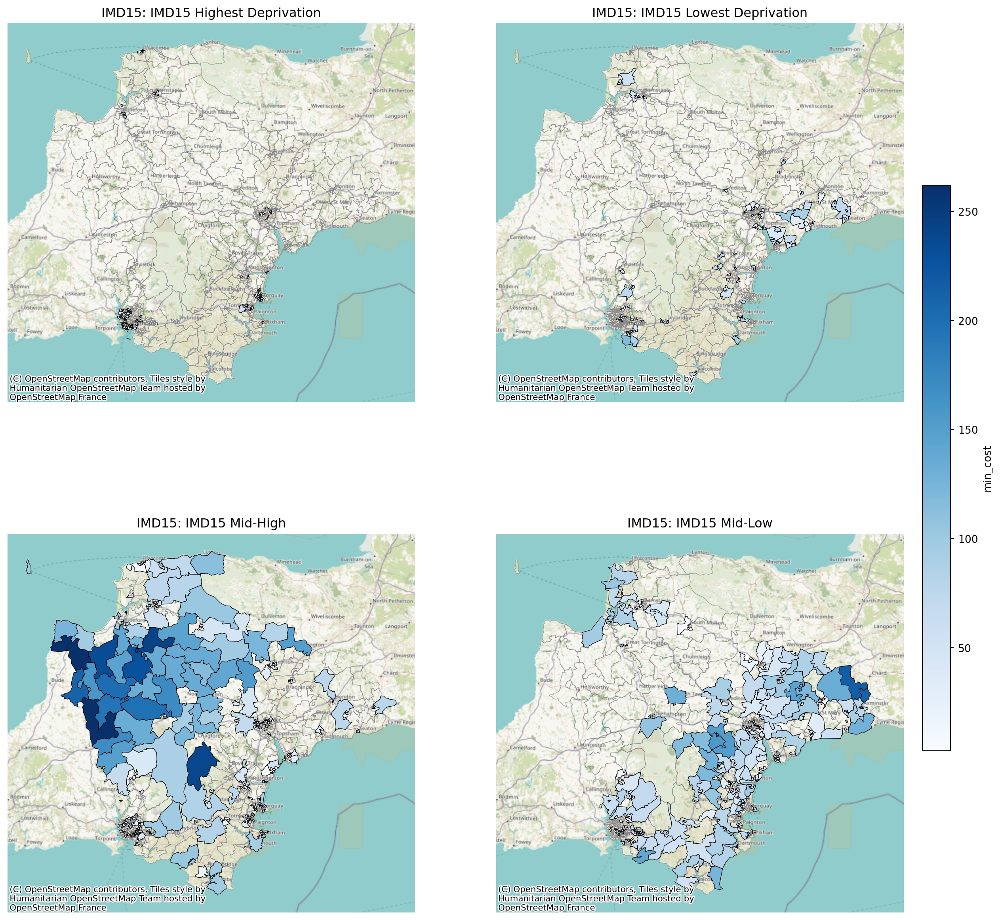

from lokigi.site import SiteProblem
problem_public_transport_extended = SiteProblem()
problem_public_transport_extended.add_sites(
"../../../sample_data/devon_mius.geojson",
candidate_id_col="Facility_Name"
)
problem_public_transport_extended.add_region_geometry_layer(
"https://github.com/hsma-programme/h6_3c_interactive_plots_travel/raw/main/h6_3c_interactive_plots_travel/example_code/LSOA_2011_Boundaries_Super_Generalised_Clipped_BSC_EW_V4.geojson",
common_col="LSOA11NM"
)
problem_public_transport_extended.add_travel_matrix(
travel_matrix_df="../../../sample_data/devon_miu_travel_matrix_public_transport_extended.csv",
source_col="from_id",
unit="minutes",
)Evaluating an existing site combination
Lokigi can also help you to evaluate your current setup, helping you to provide data that supports a case for a wider programme of re-evaluation.
It’s also useful to be able to provide a baseline for comparison with any solutions created.
In this instance, we have 15 sites.
problem_public_transport_extended.show_sites()| canonical_site_index | Facility_Name | Latitude | Longitude | geometry | |
|---|---|---|---|---|---|
| 0 | 0 | North Devon District Hospital | 51.09217 | -4.05043 | POINT (256506.101 134540.134) |
| 1 | 1 | Honiton Hospital | 50.79492 | -3.18659 | POINT (316466.043 100155.33) |
| 2 | 2 | Tiverton & District Hospital | 50.90933 | -3.49308 | POINT (295122.857 113268.884) |
| 3 | 3 | Exmouth Minor Injury Unit | 50.62083 | -3.40198 | POINT (300919.29 81063.23) |
| 4 | 4 | Victoria Hospital (Sidmouth) | 50.68161 | -3.23966 | POINT (312514.661 87617.001) |
| 5 | 5 | Newton Abbot Community Hospital | 50.53926 | -3.61224 | POINT (285848.833 72295.946) |
| 6 | 6 | Totnes Community Hospital | 50.43283 | -3.68406 | POINT (280491.309 60575.271) |
| 7 | 7 | NHS Walk in Centre (Exeter) | 50.72658 | -3.52521 | POINT (292444.533 92994.08) |
| 8 | 8 | Tavistock Hospital | 50.54708 | -4.15376 | POINT (247503.629 74139.474) |
| 9 | 9 | South Hams Hospital (Kingsbridge) | 50.28929 | -3.78143 | POINT (273194.03 44777.085) |
| 10 | 10 | Cumberland Centre (Plymouth) | 50.37004 | -4.16873 | POINT (245868.211 54486.789) |
| 11 | 11 | Derriford Hospital (UTC) | 50.41802 | -4.11890 | POINT (249563.619 59719.094) |
| 12 | 12 | Ilfracombe & District Tyrrell Hospital | 51.20468 | -4.12454 | POINT (251678.187 147197.738) |
| 13 | 13 | South Molton Hospital | 51.01681 | -3.83823 | POINT (271156.007 125767.813) |
| 14 | 14 | Dawlish Community Hospital | 50.58057 | -3.47482 | POINT (295677.679 76686.654) |
So when we solve, we simply solve for p=15.
In this instance, we’re passing in an optional ‘threshold_for_coverage’, which will flag if any regions have a travel time of more than 60 minutes from their nearest MIU.
solution = problem_public_transport_extended.solve(
p=15,
threshold_for_coverage=60, # OPTIONAL
)/__w/lokigi/lokigi/lokigi/site.py:1434: UserWarning:
No demand data was provided. Demand from all regions has been assumed to be equal.If you wish to override this, run .add_demand() to add your site dataframe before running .solve() again.You can use the .show_demand_format() to see the expected format beforehand.
solution.show_solutions()| solution_rank | site_names | site_indices | coverage_threshold | weighted_average | unweighted_average | 90th_percentile | max | proportion_within_coverage_threshold | problem_df | |
|---|---|---|---|---|---|---|---|---|---|---|
| 0 | 1 | [North Devon District Hospital, Honiton Hospit... | [0, 1, 2, 3, 4, 5, 6, 7, 8, 9, 10, 11, 12, 13,... | 60 | 56.03 | 56.03 | 96.4 | 262.0 | 0.63 | from_id from_id_x North D... |
solution.plot_best_combination(
title = """Baseline - Current Configuration
Coverage within threshold of {solution['coverage_threshold'].values[0]} minutes: {solution['proportion_within_coverage_threshold'].values[0]:.1%}
Unweighted Average: {solution['unweighted_average'].values[0]:.1f} minutes
Maximum: {solution['max'].values[0]:.1f} minutes""",
height=16,
width=9,
annotation_size=6
);/__w/lokigi/lokigi/lokigi/mixins/site_solution_plots.py:591: UserWarning:
The GeoDataFrame you are attempting to plot is empty. Nothing has been displayed.

solution.plot_best_combination(
plot_regions_not_meeting_threshold=True,
title = """Baseline - Current Configuration
Coverage within threshold of {solution['coverage_threshold'].values[0]} minutes: {solution['proportion_within_coverage_threshold'].values[0]:.1%}
Unweighted Average: {solution['unweighted_average'].values[0]:.1f} minutes
Maximum: {solution['max'].values[0]:.1f} minutes"""
);/__w/lokigi/lokigi/lokigi/mixins/site_solution_plots.py:591: UserWarning:
The GeoDataFrame you are attempting to plot is empty. Nothing has been displayed.

solution.plot_best_combination(
plot_site_allocation=True,
legend_bbox_to_anchor=(1.65, 1),
title = """Baseline - Current Configuration
Coverage within threshold of {solution['coverage_threshold'].values[0]} minutes: {solution['proportion_within_coverage_threshold'].values[0]:.1%}
Unweighted Average: {solution['unweighted_average'].values[0]:.1f} minutes
Maximum: {solution['max'].values[0]:.1f} minutes"""
);/__w/lokigi/lokigi/lokigi/mixins/site_solution_plots.py:591: UserWarning:
The GeoDataFrame you are attempting to plot is empty. Nothing has been displayed.

We might also want to explore the solution equity.
problem_public_transport_extended.add_equity_data(
"../../../sample_data/Index_of_Multiple_Deprivation_(Dec_2015)_Lookup_in_England.csv",
equity_col="IMD15",
common_col="LSOA11NM",
label="Indices of Multiple Deprivation",
continuous_measure=True,
reverse=False
)problem_public_transport_extended.plot_region_geometry_layer(
plot_equity=True,
plot_region_of_interest_only=True
)
Let’s re-solve, overwriting our previous object.
solution = problem_public_transport_extended.solve(
p=15,
threshold_for_coverage=60, # OPTIONAL
)solution.check_solution_equity(return_plot=True)groupings = {
"IMD15 Highest Deprivation": [1, 2],
"IMD15 Lowest Deprivation": [9, 10],
"IMD15 Mid-High": [3, 4, 5],
"IMD15 Mid-Low": [6, 7, 8],
}
solution.plot_combination_by_equity(figsize_multiplier=8, groupings=groupings, ncols=2);
Once we have a baseline, we can start using our comparison tools.
Back to top